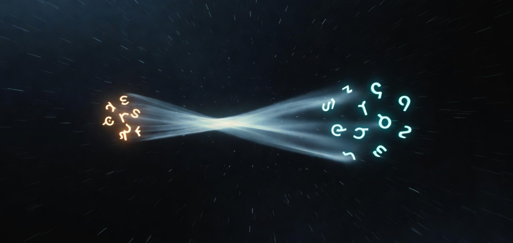

When I took my first electromagnetics class as an undergrad, I was fortunate to study under Professor Robert L. Gunshor — a highly regarded researcher in lasers and semiconductor optoelectronics. The course was one of the most demanding in the ECE curriculum, and my GPA at the time usually hovered on the B side. I bombed a handful of classes I had to retake, so I was far from the perfect student. Yet for some reason, I earned A's in some of the hardest classes in the curriculum without having to retake them.
My primary flaw as a student has always been the same: I refuse to regurgitate textbook instructions. If I couldn't understand the what and why behind each step, my brain would simply trip a circuit breaker and leave me in a total state of confusion. This made conventional problem sets painful, but it also forced me to approach problems from first principles.
For the first exam, I studied hard. The opening problem was unusually difficult — nothing like the homework examples. Instead of relying on memorized formulas, I derived a solution from basic electromagnetic fundamentals. When the tests were returned, a majority of the roughly 100 students had failed to solve that first problem. I ended up with the third-highest score in the class.
As Professor Gunshor handed my exam back, I was staring at what I thought was my paper and wore a visibly disappointed expression. In a slightly sarcastic tone he asked, "Why are you unhappy about your score?" My frown instantly flipped into a grin when I saw the actual number.
That small, memorable interaction stayed with me. It reinforced a principle I've carried into every technical domain since — including my current journey with large language models: real understanding rarely comes from rote memorization or clean stepwise recipes. It comes from stubbornly demanding to see the underlying mechanics, even when the path is slower, more circuitous, and occasionally painful.
This same stubborn refusal to accept disembodied instruction sets is exactly why I approached the attention mechanism the way I did. Instead of starting with the seminal "Attention Is All You Need" paper, I chose to ask frontier models to describe — in philosophical and analogical terms — how analogy itself might emerge in their latent space. I wanted the system to introspect on its own substrate using the very relational machinery it possesses.
I made this statement in Chapter 2 about analogy:
"We are reverse-engineering something we cannot yet describe—because the very act of description requires the thing we are trying to describe."
It's a fun paradox to contemplate, but it probably distorts the objective. Maybe analogy is just the act of describing something with tokens, and analogical bridging is simply the higher probability that the current sequence of tokens influences the hidden state to point toward a similar cluster describing something related but separate.
Maybe my first idea on how to reduce a description into a kernel was too complicated. Maybe I don't need two related analogies at all. Maybe the prefill itself is the best reduction mechanism. Just start with a rich description of anything and see how coherent the output is as I remove tokens from that description.
While researchers have studied minimal prompts, prompt compression, and output coherence separately, few appear to treat the degree of coherence in the generated output as a direct, simple test of whether the input has successfully formed a coherent conceptual structure in the model's latent pond.
In this view, every response becomes a live diagnostic: rich, proportional output indicates a well-formed pond of lily pads; generic, repetitive, or rapidly diverging output reveals a nearly empty pond.
But in the most basic case, a prefill that contains only one clear concept should produce output that demonstrates a coherent understanding of that single concept.
This article is intentionally short because I feel it only needs to introduce one concept I believe is important.
I have zero clue whether the KRO method has any real practical application, or if something like it is already being used to decompose the generation phase in technical papers. I'm constantly asking Grok if anyone is thinking this way about it, and Grok keeps saying nobody is describing a KRO-type operation with these goals in any of the technical papers it is aware of. Either way, it feels like a useful primitive worth putting out there.